Logic gates
A1.2 Data representation and computer logic
A1.2.3 Describe the purpose and use of logic gates.
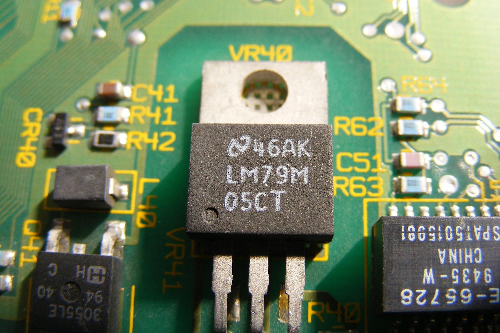
Binary systems are not just a mathematical abstraction, but are the foundation of digital electronics. Physically switching between two states is simpler and more reliable than between multiple states, which led to the use of the binary system. A bit (0 or 1) can be represented by any physical medium that switches between two states.
Computing is based on the fact that we can represent and process numerical values using physical systems that have two states, or the binary system.
Transistor
The basic building block of digital electronic circuits is the transistor. A transistor is an electronic switch that is controlled by an electrical signal – when a signal is applied to the input, the transistor allows or disables the flow of electricity through it. Before the invention of the transistor, a mechanical switch, an electrical relay, and a vacuum tube were used as switches. The advantages of the transistor are its small size, speed, quietness, low power consumption, and the ability to integrate a large number of transistors in a small space.
A transistor is made of semiconductor materials (silicon, germanium) with additives (gallium, arsenic, indium, and other substances). Transistors are generally classified into two categories: bipolar junction transistor (BJT) and field effect transistor (FET).
The concept of the field effect transistor was proposed in 1925 by Julius Edgar Lilienfeld. John Bardeen, Walter Brattain, and William Shockley invented the first working transistor at Bell Labs in 1947. Shockley introduced an improved bipolar junction transistor in 1948, which began production in the early 1950s, leading to the widespread use of transistors.
The MOSFET (metal-oxide-semiconductor field-effect transistor), also known as the MOS transistor, was invented by Mohamed Atalla and Dawon Kahng at Bell Labs in 1959. MOSFET transistors have become the most widely used electronic component in history due to their low power consumption.
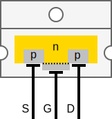
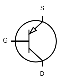
From left to right: physical, structural and symbolic representation of a transistor (pnp-type).
The major limitations of the early MOS transistors were speed and high sensitivity to static discharges. Today's MOS transistors have improved immunity to the described disturbances and improved speed and, most importantly, much lower power consumption for operation.
If we combine two MOSFET transistors into a complementary pair (CMOS – Complementary MOS), we get significantly improved switching properties, especially extremely low current consumption. A complementary pair of MOS transistors is built from two transistors of different types (pnp and npn), whose channels are connected in series (see figure below) and are controlled in opposite directions.
Interactive MOS transistor
When the gate (G) is turned on, a conductive »channel« will be created under the insulation in the base (marked yellow in light mode or blue in dark mode). This will allow electric current to flow between the source (S) and drain (D) electrodes. The p and n symbols represent the silicon base with different types of impurities.
Truth table
Now that we have learned about the basic building blocks of digital circuits – transistors, which act as electronic switches – let’s look at how we can describe the operation of digital circuits. To do this, we use truth tables, which show us how the circuit responds to different combinations of input signals.
A truth table is organized so that on the left side it contains all possible combinations of inputs to a logic circuit, on the right side it contains intermediate states, and finally all possible combinations of usually one, but also several outputs. It is sometimes called a truth table.
Next, we will look at truth tables with one, two, and three inputs. We use truth tables with multiple inputs in the same way. So if we understand truth tables with one, two, or three inputs, we will also understand truth tables with multiple inputs. It is worth noting that inputs are usually denoted by the letters a, b, c, d ... or x, y, z, w ... However, both lowercase and uppercase letters can be used. The output is often denoted as a function of the inputs, or by the letters f or q.
Since each input can assume exactly two states, a circuit with one input will have exactly two different inputs (since 21 = 2) and corresponding outputs:
| x | f(x) |
| 0 | 1 |
| 1 | 1 |
A two-input circuit will have exactly four different combinations of inputs (since 22 = 4) and a corresponding output for each of the input combinations:
| x | y | f(x, y) |
| 0 | 0 | 1 |
| 0 | 1 | 0 |
| 1 | 0 | 1 |
| 1 | 1 | 1 |
A three-input circuit will have exactly eight different combinations of inputs (since 23 = 8) and a corresponding output for each of the input combinations:
| x | y | z | f(x, y, z) |
| 0 | 0 | 0 | 1 |
| 0 | 0 | 1 | 0 |
| 0 | 1 | 0 | 1 |
| 0 | 1 | 1 | 1 |
| 1 | 0 | 0 | 0 |
| 1 | 0 | 1 | 0 |
| 1 | 1 | 0 | 1 |
| 1 | 1 | 1 | 1 |
What is the easiest way to write down all combinations of inputs so that none of them are omitted or repeated? Let's look at this using the example of three input variables or three inputs.
To systematically write down all combinations of three inputs, we use their numerical values: we write down all binary numbers from 0 to 7 (a total of 23 = 8 numbers) with three bits.
- 0 is written as 0 0 0
- 1 is written as 0 0 1
- 2 is written as 0 1 0
- 3 is written as 0 1 1
- 4 is written as 1 0 0
- 5 is written as 1 0 1
- 6 is written as 1 1 0
- 7 is written as 1 1 1
NOT logic gate
Logic gates are the basic building blocks of digital circuits that perform logical operations on binary values (0 and 1). Let's start with the simplest logic gate, the NOT logic gate (inverter), which has one input and one output. Its job is to invert the input value – if the input is 0, the output will be 1, and vice versa.
In logic circuits, we denote a NOT logic gate with the following symbols:
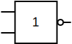
In logical expressions, the NOT operation on input is denoted as: x', x or ¬x, and the truth table of the NOT operation looks like this:
| x | x' |
| 0 | 1 |
| 1 | 0 |
Interactive NOT logic gate
Try out the interactive animation of the NOT logic gate by turning the switch on or off.
Buffer logic gate
A buffer has one input and one output. The function of a buffer is to receive a value at the input and return the same, but amplified, value at the output. It can also be used to create delays in logic circuits. We will not use it in logic circuits.
In logic circuits, we denote a buffer with the following symbols:
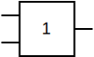
The truth table of the Buffer looks like this:
| x | x |
| 0 | 0 |
| 1 | 1 |
Interactive Buffer
Try out the interactive animation of the Buffer by turning the switch on or off.
AND logic gate
The AND logic gate (logical conjunction) has two inputs and one output. The AND logic gate returns value 1 at the output if both inputs have value 1.
In logic circuits, we denote an AND logic gate with the following symbols:
In logical expressions, the AND operation on inputs x and y is denoted as: x · y or x Λ y, and the truth table of the AND operation looks like this:
| x | y | x · y |
| 0 | 0 | 0 |
| 0 | 1 | 0 |
| 1 | 0 | 0 |
| 1 | 1 | 1 |
Interactive AND logic gate
Try out the interactive animation of the AND logic gate by turning the switches on or off.
NAND logic gate
The NAND (NOT-AND) logic gate (negation of logical conjunction) has two inputs and one output. The NAND logic gate returns value 1 at the output if at least one of the inputs has value 0.
In logic circuits, we denote an NAND logic gate with the following symbols:
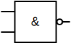
In logical expressions, the NAND operation on inputs x and y is denoted as: (x · y)', x · y, x Λ y or x ↑ y, and the truth table of the NAND operation looks like this:
| x | y | (x · y)' |
| 0 | 0 | 1 |
| 0 | 1 | 1 |
| 1 | 0 | 1 |
| 1 | 1 | 0 |
Interactive NAND logic gate
Try out the interactive animation of the NAND logic gate by turning the switches on or off.
OR logic gate
The OR logic gate (logical disjunction) has two inputs and one output. The OR logic gate returns value 1 at the output if at least one of the inputs has value 1.
In logic circuits, we denote an OR logic gate with the following symbols:
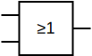
In logical expressions, the OR operation on inputs x and y is denoted as: x + y or x V y, and the truth table of the OR operation looks like this:
| x | y | x + y |
| 0 | 0 | 0 |
| 0 | 1 | 1 |
| 1 | 0 | 1 |
| 1 | 1 | 1 |
Interactive OR logic gate
Try out the interactive animation of the OR logic gate by turning the switches on or off.
NOR logic gate
The NOR (NOT-OR) logic gate (negation of logical disjunction) has two inputs and one output. The NOR logic gate returns value 1 at the output if both inputs have value 0.
In logic circuits, we denote an NOR logic gate with the following symbols:
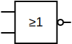
In logical expressions, the NOR operation on inputs x and y is denoted as: (x + y)', x + y, x V y or x ↓ y, and the truth table of the NOR operation looks like this:
| x | y | (x + y)' |
| 0 | 0 | 1 |
| 0 | 1 | 0 |
| 1 | 0 | 0 |
| 1 | 1 | 0 |
Interactive NOR logic gate
Try out the interactive animation of the NOR logic gate by turning the switches on or off.
XOR logic gate
The XOR (eXclusive OR) logic gate (negation of equivalence) has two inputs and one output. The XOR logic gate returns value 1 at the output if exactly one of the inputs has value 1.
In logic circuits, we denote an XOR logic gate with the following symbols:
 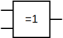
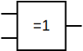
In logical expressions, the XOR operation on inputs x and y is denoted as: x ⊕ y or x ⇎ y, and the truth table of the XOR operation looks like this:
| x | y | x ⊕ y |
| 0 | 0 | 0 |
| 0 | 1 | 1 |
| 1 | 0 | 1 |
| 1 | 1 | 0 |
Interactive XOR logic gate
Try out the interactive animation of the XOR logic gate by turning the switches on or off.
XNOR logic gate
The XNOR (NOT-XOR) logic gate (equivalence) has two inputs and one output. The XNOR logic gate returns value 1 at the output if both inputs have the same value.
In logic circuits, we denote an XNOR logic gate with the following symbols:
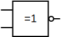
In logical expressions, the XNOR operation on inputs x and y is denoted as: x ≡ y or x ⇔ y, and the truth table of the XNOR operation looks like this:
| x | y | x ≡ y |
| 0 | 0 | 1 |
| 0 | 1 | 0 |
| 1 | 0 | 0 |
| 1 | 1 | 1 |
Interactive XNOR logic gate
Try out the interactive animation of the XNOR logic gate by turning the switches on or off.
Using logic gates
Several logic gates can be combined into an integrated circuit, which is a microcircuit consisting of a multitude of electronic elements connected to each other on a common substrate made of semiconductor material to form an electronic circuit. The circuit contains active elements (transistor, diode, etc.) as well as passive elements (resistor, capacitor, etc.).
An integrated circuit built into a housing is called a chip. The word chip comes from American computer slang and means a silicon wafer.
We will use chips from the 4000 family, which were produced by many companies in the past – chips from this family were first produced by RCA in 1968. The table below lists the chips that we will use:
| Identifier | Description | Datasheet |
|---|---|---|
| 4001 | Four 2-input NOR gates | RCA, CD4001B, HEF4001B, MC14001B |
| 4011 | Four 2-input NAND gates | RCA, CD4011B, HEF4011B, MC14011B |
| 4049 | Six NOT (inverter) gates | RCA, CD4049UB, HEF4049B, MC14049B |
| 4070 | Four 2-input XOR gates | RCA, CD4070B, HEF4070B, MC14070B |
| 4071 | Four 2-input OR gates | RCA, CD4071B, HEF4071B, MC14071B |
| 4077 | Four 2-input XNOR gates | RCA, CD4077B, HEF4077B, MC14077B |
| 4081 | Four 2-input AND gates | RCA, CD4081B, HEF4081B, MC14081B |
First, we will only look at chips that contain the same logic gates. We will see how to connect the chips on a breadboard with wires to the buttons and a diode. With such a simple circuit, we can then test the operation of individual logic gates and see if it matches the theoretical knowledge we have acquired so far.
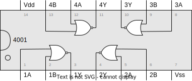
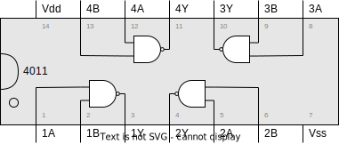
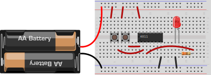
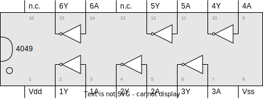
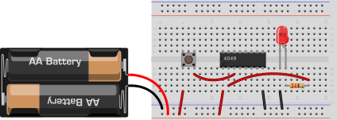
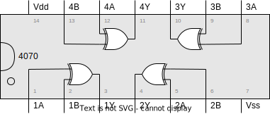
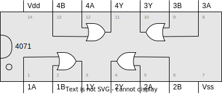
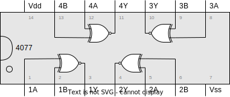
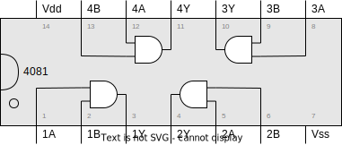